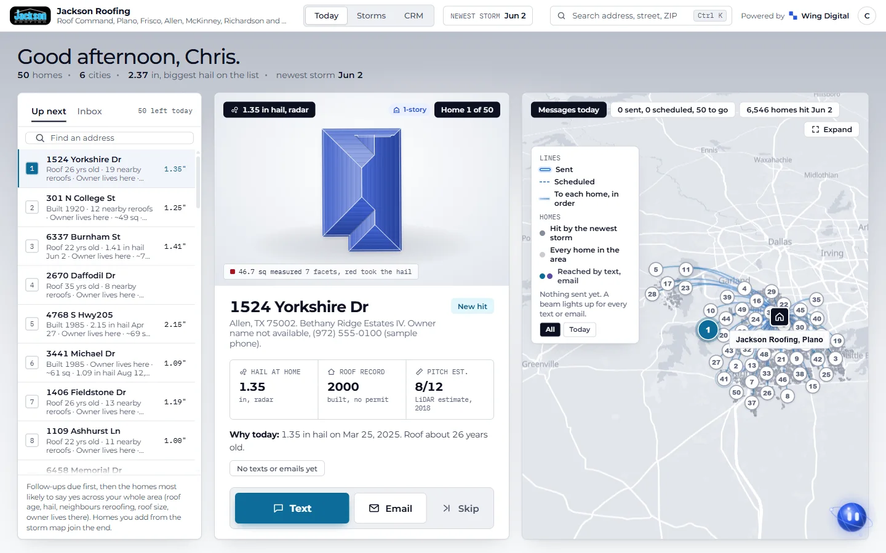
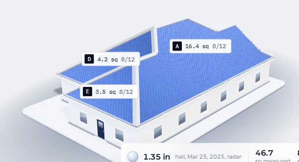

Your June 2 storm put about $1.26 million in roofs within reach.
Roof Command finds the homes the storm hit, ranks the ones most likely to need a roof, and keeps every conversation in one place. Wing Digital runs it for you.
How we counted. Radar hail of 1 inch or larger on June 2 over homes in 4 counties (NOAA radar). A roof counts as 15 or more years old by the county year built or the last re-roof permit, with permits from Collin County records (2023 on). These are the same numbers the Morning After alert in the software shows. Denton County permits are not in the data yet, so a few of these homes may already have a new roof. The 2% close rate and the $15,000 ticket are our estimates for DFW, not promises. At 1% it is half this number.
Why the list is worth working
We tested the Turnover Radar on months it had never seen.
In held-out testing (21 months of 2025 and 2026 that the score never saw), homes with 2 or more recent re-roofs within about a block re-roofed 14 to 27 times as often as homes with none.
Out of 2,856 re-roofs in that period. Back-test on Collin County permit records. Hail size is a radar estimate, not an inspection.
What Jackson gets
One app for the storm, the list, the roof and the conversation. This is your Today screen with your storm data.

Storm map
Every storm on file, with the homes that took 1 inch hail or larger lit up street by street.
Daily 50
A ranked list of 50 homes to reach each day: roof age, hail it took, and whether a re-roof permit is on file.
Turnover Radar
Streets where neighbors have re-roofed lately, so you walk a block with a reason to knock.
Homeowner proof page
One page per home with the storm date, hail size and what hit the street. Your rep sends it with one tap.
CRM
Inbox, pipeline and calendar from new hit to signed contract, with the next step always on top.
SEO, done for you
Wing publishes blog posts and service pages for Jackson so the homeowners who search for a roofer find you too.
LiDAR measurements
A 3D roof with squares and pitch estimated from LiDAR. An estimate, typically within about 10% of permit records. Order a measurement report before you quote.

People stay in charge of every message. Nothing goes to a homeowner unless someone on your team taps send.
What extra roofs are worth to you
Try your own numbers. We assume about a 25% margin; change it to match yours.
1 extra roof a month at $15,000 is about $3,750 in profit a month, $45,000 a year.
Profit here means the share of the job you keep after material and crew, at the margin you enter. Our 25% is an estimate, not a promise.
The storm decides which streets. Roof Command shows you which doors.
Your rep's day, before and after
How it works
Wing runs the system. Your team does what only your team can do.
Every weekWhat Wing does
Keeps the hail and roof data fresh and checks for new storms. Rebuilds your Daily 50. Publishes blog posts and service pages so homeowners find you in search. Handles setup, fixes and your questions.
Every dayWhat your team does
Works the Daily 50: text, email, call or knock. Taps send on every message. Sends the proof page to homeowners who want to see the storm record. Runs the inspections and the estimates.
Every morningWhat you see
Open Roof Command and Today shows the Daily 50, new replies and the next step on each home. The morning after a storm, it leads with the storm and how many homes it hit.
Every weekHow results are reported
A short weekly summary from Wing: homes reached, replies, inspections booked, jobs won, and what we published. Your pipeline in Roof Command shows the same counts any time you look.
Next step
Reply to the email this came with and we will set Jackson Roofing up before the next storm.